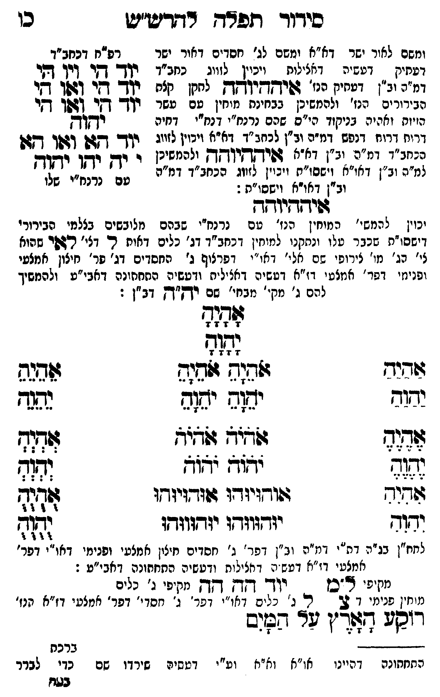

Neue Klartextfassung
[ומשם לאור ישר דא"א ומשם לג' חסדים דאור ישר דעתיק דעשיה דכללות ויכוין לזווג כחב"ד דמ"ה וב"ן דעתיק איההיוהה לתקן כלם הבירורים הנז' ולהמשיכן כבחינת מוחין עם עשר הויות וחלפי' בניקוד כ"ס שהם נרנח"י ורנח"י דיחידה דרוח דנפש דמ"ה וב"ן לכחב"ד דא"א ויכוין לזווג בכחב"ד דמ"ה וב"ן דא"א איההיוהה ולהמשיכן למ"ה וב"ן דאו"א וישסו"ת ויכוין לזווג הכחב"ד דמ"ה וב"ן דאו"א וישסו"ת:] === טבלה === [טור שמאל — רפ"ח דכחב"ד] יוד הי ויו הי יוד הי ואו הי יוד הי ואו הי יהוה יוד הא ואו הא [למ"ד לאבא] י יה יהו יהוה [למ"ן לאימא עם נרנח"י שלו] === סוף טבלה === איההיוהה [יכוין להמשי' המוחין הנז' עם נרנח"י שבהם מלובשים בצלמי הבירורי' דישסו"ת שכבר עלו ונתקנו למוחי' דכחב"ד דג' כלים האות ל דצירוף לאי דג' כלי הארה לג' מו' דיצו' עם טל' דנה"י דאו"י דפרצוף ג' החסדים דג' פר' חיצון אמצעי ופני' דפרצוף אמצעי דז"א דעשיה דכללות ורביעיה התחתונה דאבי"ע ולהמשיך להם ב' מקי' ממקי' שם יה"ה דב"ן:] === טבלה === [טור ימין] אַהַיַהַ יַהַוַהַ אֶהֶיֶהֶ יֶהֶוֶהֶ אִהִיִהִ יִהִוִהִ [טור אמצעי] אָהָיָהָ יָהָוָהָ אֹהֵיָהֵ אֹהֵיָהֵ יֹהֵוָהֵ יֹהֵוָהֵ אֹהֹיֹהֹ אֹהֹיֹהֹ יֹהֹוֹהֹ יֹהֹוֹהֹ אוּהוּיוּהוּ אוּהוּיוּהוּ יוּהוּווּהוּ יוּהוּווּהוּ [טור שמאל] אֵהֵיֵהֵ יֵהֵוֵהֵ אְהְיְהְ יְהְוְהְ אֻהֻיֻהֻ יֻהֻוֻהֻ === סוף טבלה === [לחח"ן בג"ה דת"י דמ"ה וב"ן דפר' ג' חסדים חיצון אמצעי ופנימי דאו"י דפר' אמצעי דז"א דעשיה דכללות ורביעיה התחתונה דאבי"ע:] [מקיפי ל"ם] יוד הה הה [מקיפי ג' כלים] [מוחין פנימי דצ'] צ ל ג' [ג' כלים דאו"י דפר' ג' חסדי' דפר' אמצעי דז"א הנז'] רוקע הארץ על המים
Original gegen neue OCR · Niqqud für Vergleich ausgeblendet
Original
[ומשםK056-001 לאור ישר דא"א ומשם לג' חסדים דאור ישר דעתיק דעשיה דכללות ויכויןK056-002 לזווג כחב"ד דמ"הK056-003 וב"ן דעתיק איההיוהה לתקן כלםK056-004 הבירורים הנז' ולהמשיכן כבחינתK056-005 מוחין עם עשר הויות וחלפי'K056-006 בניקוד כ"סK056-007 שהם נרנח"י ורנח"י דיחידהK056-008 דרוח דנפש דמ"ה וב"ן לכחב"ד דא"א ויכוין לזווג בכחב"ד דמ"הK056-009 וב"ן דא"א איההיוהה ולהמשיכן למ"הK056-010 וב"ן דאו"אK056-011 וישסו"ת ויכוין לזווג הכחב"ד דמ"ה וב"ן דאו"א וישסו"ת:] === טבלה === [טור שמאל — רפ"ח דכחב"ד] יוד הי ויו הי יוד הי ואו הי יוד הי ואו הי יהוה יוד הא ואו הא [למ"ד לאבא] י יה יהו יהוה [למ"ן לאימא עם נרנח"י שלו] === סוף טבלה === איההיוהה [יכויןK056-012 להמשי' המוחין הנז' עםK056-013 נרנח"י שבהם מלובשים בצלמי הבירורי' דישסו"תK056-014 שכבר עלוK056-015 ונתקנו למוחי'K056-016 דכחב"ד דג' כלים האות ל דצירוף לאי דג' כלי הארה לג'K056-017 מו' דיצו' עם טל' דנה"יK056-018 דאו"י דפרצוף ג' החסדים דג' פר' חיצון אמצעי ופני' דפרצוף אמצעי דז"א דעשיה דכללות ורביעיה התחתונהK056-019 דאבי"ע ולהמשיך להם ב' מקי' ממקי'K056-020 שם יה"ה דב"ן:] === טבלה === [טור ימין] אהיה יהוה אהיה יהוה אהיה יהוה [טור אמצעי] אהיה יהוה אהיה אהיה יהוה יהוה אהיה אהיה יהוה יהוה אוהויוהו אוהויוהו יוהוווהו יוהוווהו [טור שמאל] אהיה יהוה אהיה יהוה אהיה יהוה === סוף טבלה === [לחח"ןK056-021 בג"ה דת"י דמ"ה וב"ןK056-022 דפר' ג' חסדים חיצוןK056-023 אמצעי ופנימי דאו"י דפר' אמצעיK056-024 דז"א דעשיה דכללות ורביעיה התחתונה דאבי"ע:] [מקיפי ל"ם] יוד הה הה [מקיפיK056-025 ג' כלים] [מוחיןK056-026 פנימי דצ'] צ ל ג' [ג' כלים דאו"י דפר'K056-027 ג' חסדי' דפר' אמצעיK056-028 דז"א הנז'] רוקע הארץ על המיםK056-029
OCR · fehlbar
סיךוךד תפד ד"דזדיש"יט כן ומשםK056-001 לאור ישר דא"א ומשם לג' חסדים דאור ישר רפ"ח דכחב"ד דעחיק - דטשיה דאצילוח ויכיןK056-002 לזווג נחב"ד יךך- דקר דיך דקי ומ"הK056-003 וב"ן דפחיק הנז' גפישדיווךדק לחקן קצת קד שי (6קך איK056-004 הבירורים הנז' ולהמשיכן בבחינתK056-005 מוחין עם עשר קי(- דזר דלך דקי ה(יוח ואהיהK056-006 בניקוד הי"סK056-007 שהם נרנח"י דנח"י דחיה יקחך דריחK056-008 דרוח דנפש דמ"פ ול"ן 2332 8:34 וינין לזוג: יוד- דש (זו דזן הנחב"ד דמזה יב"ן דתא ףפיךקךיקך להטש(נן י. ידך' נן יצדק גמ"חK056-009 וב"ן דא"א וישסו"ת ויבוין לזווג הנחב"ד ומ"ר טש - נלגא"נ זשלןK056-010 וב"ן דאודאK056-011 וישסו"ת : שידדיודד יכויןK056-012 להמשי' המיחין הנו' טםK056-013 נרנח"י שבהם מלובשים בצלמי הבירורי דישס("תK056-014 שכבר טלוK056-015 ונתקנו למיחיןK056-016 דכחב"ד דג' כלים דאות ר. דצי' רזפר שהוא צי' ג'K056-017 מו' צירופי שם אלי'K056-018 דאו"י דפרצוף ג' החסדים דג' פר' חיצון אמצעי ופניגזי דשרר' אנזצעי ד"א דטשיה דאציל יה ודעשיה החחחונהK056-019 דאבי"ע ולהמשיך להם ג' מק'' מבחי'K056-020 שם רךק"דץ דב"ן : ל[ד[ג- 7 7 2 2 ובוש ז 4 3 דיד גזת( ז[חנש 6זוגגש יחזד יג(ג ימזש תד צד:ד ד"ץ גלא"א דנח (נ(- ידז- "צו וזז- גדגיד גנוייודו זוודויוחו ל וז[ד- יודגוגדגו יזדדזיזדץן (7ז7 לחחז"ןK056-021 בג"ה דת"י דמ"ט יג"ןK056-022 דפר' ג' חסדים חיציןK056-023 אמצעי ופנימי דאו"י דפר' אמצטיK056-024 דז"א דטש יג דחצילות ודטשיה החתונה דאבי"ע : מיץיפי 6"כן יוך ד[-ץ דקץ מקיפיK056-025 ג' נלים מיוזיןK056-026 פנימי 7 2 ה נ' נלים דאו"י' ופר'K056-027 ג' חסדי' דפר' אמצטיK056-028 דז"א חנז' רוסע2 דצןצ"ן ער הש(ס 2 7 0- 7. - 44440ללל ברכת התחתונה דהיינו או"א וא"א וע"י דטשיה שירדו שם כדי לברר בגוזK056-029